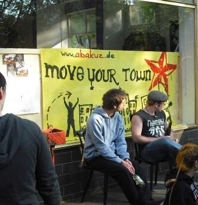

Leicht gekürzt bringen wir die Rede, die eine Vertreterin von AbaKuZ am letzten Samstag anläßlich der Eröffnung des AbaKuZ-Zentrums B9 – Kulturlabor und Infoladen gehalten hat.

Fotos: Archiv kommunal
Es ist für uns unglaublich, hier gemeinsam mit Gästen bei der Eröffnung unserer eigenen Räumen zu stehen! Seit der Gründung 2003 haben wir keine passenden Räume für unsere Idee finden können. Zwischenzeitlich hatten wir schon Angst, dass wir uns in „Abakuz -Verein ohne Räume e. V.“ umbenennen müssen!
Auf den Weg zu unserem neuen Vereinsdomizil haben wir dafür viele Leute kennengelernt! Sämtliche Immobilienmakler der Stadt, den Bürgermeister der Stadt aber auch viele Einrichtungen, in denen wir alternativ unsere Konzerte, Vortragsveranstaltungen und Partys machen konnten. Wir haben wertvolle Kontakte und Freundschaften schließen können, mit Leuten, die ebenfalls im kulturellen und politischen Bereich engagiert sind und mit denen wir hoffentlich in Zukunft noch mehr auf die Beine stellen können.
Wir waren zwar bisher raumlos aber nicht tatenlos! Wir können für die vergangenen Jahre ca. 15 Konzerte vorweisen, über 15 Vortragsveranstaltungen, mehrere Filmabende, zwei Sommerfeste, ein Duzend Voküs bzw. Brunchs, zwei große Themenpartys, einen Flohmarkt, mehrere Infostände sowie Stände und Filmzelt auf dem Kommz, einen Antifa-Infotag und die 1.-Mai-Teilnahme.
Nun gehen wir einen Schritt weiter und öffnen unsere Räume als Kulturlabor und Infoladen. Diese Räume können nicht nur von uns, sondern auch von anderen unkommerziell tätigen Gruppen und Einzelpersonen genutzt werden. Als Treffpunkt, als Arbeitsräume, als Anlaufstelle für alle Interessierten und Neugierige. Man kann aber auch nur die Infowand mit Flyern nutzen oder politische Literatur ausleihen. Es gibt eine Veranstaltungsinfrastruktur (Videobeamer, Leinwand, Lautsprecheranlage etc.), aber auch eine kleine Küche mit entsprechendem Zubehör. Diese Räume sollen ein Ort sozialen Lebens mit politischer Ausstrahlung sein!
Wer unsere Ziele kennt, weiß, dass wir mit diesen Räumen hier aber erst eine Zwischenstation erreicht haben. Ein Kulturzentrum in dem alles vor Ort stattfinden kann, alternativ, unkommerziell und selbstverwaltet, dieses Ziel steht noch aus!
Weitere Infos bei AbaKuZ

Hallo
heute in der Zeitung:
Kulturlabor, Treffpunkt und Infoladen
Abakuz: Alternativer Verein hat Domizil »B 9« am Brentanoplatz eröffnet – Raum für Lesungen und Workshops
Aschaffenburg Der Aschaffenburger Verein Abakuz – eine Abkürzung für »Aschaffenburger Alternatives Kulturzentrum« – hat nach langer Suche ein Vereinsdomizil gefunden und ist seinem Ziel, einem Kulturzentrum in der Stadt, ein Stück näher gekommen. Am Wochenende hat die Organisation das »B 9« am Brentanoplatz eröffnet.
»Wir wollen hier unsere Kulturzentrumsidee in abgespeckter Form umsetzen«, verrät Abakuz-Vorsitzende Katalin Liebert.
Als »Kulturlabor und Infoladen« bezeichnete Vorstandsmitglied Mona Steigerwald den Abakuz-Stützpunkt in einer Ansprache bei der Eröffnung, zu der etwa 50 Besucher kamen. Nicht nur Abakuz-Mitglieder können die Räume nutzen, so die Idee. Auch anderen, nicht kommerziell tätigen Gruppen und Einzelpersonen will der Verein die Räume zur Verfügung stellen: als Treffpunkt, als Arbeitsraum oder als Anlaufstelle.
Eine Bibliothek mit 500 Bänden
Laut Abakuz können im »B 9« Workshops, Seminare, Gruppentreffen, Veranstaltungsvorbereitung oder Ausstellungen stattfinden. Es gibt eine Infowand mit Flyern. Eine Bibliothek hält 500 Bücher und eine Auswahl aktueller Zeitschriften zu gesellschaftspolitischen und kulturellen Themen bereit. »Der Raum soll Gruppen dienen, die sich nicht zuhause oder in Nebenräumen von Kneipen treffen wollen«, sagt Liebert. So könnten im »B 9« beispielsweise auch Plakate gestaltet werden.
Freilich haben die ehemaligen Ladenräume auch ihre Grenzen. »Wir können hier nicht alles machen, was wir wollen«, bedauert Liebert. Für Konzerte oder größere Aktionen werde Abakuz auch weiterhin an andere Orte wie das Jugendkulturzentrum ausweichen müssen.
Aber für Lesungen und Diskussionen ist der Raum am Brentanoplatz gut geeignet. Es gibt Sitzgelegenheiten, eine Kaffeeküche und für kleinere Veranstaltungen hält der Verein Beamer, Leinwand und eine Lautsprecheranlage bereit.
Die Suche nach Räumen für ihr Zentrum beschäftigt den Verein seit Jahren. Im Herbst vergangenen Jahres hatte es Gespräche mit dem Jugendamt und dem Liegenschaftsamt gegeben (wir berichteten). »Wir hatten schon Angst, dass wir uns in Abakuz Verein ohne Räume umbenennen müssen«, scherzte Mona Steigerwald am Samstag. Erst jetzt ist Abakuz auf dem freien Markt fündig geworden.
Miete vom Verein finanziert
Finanziert wird die Miete für den Abakuz-Stützpunkt von den Vereinsmitgliedern. Mitgliedsbeiträge und Erlöse aus Konzerten helfen, »B9« am Laufen zu halten. Verbindliche Öffnungszeiten hat das Abakuz-Kulturlabor erst einen: das wöchentliche Treffen der Abakuz-Mitglieder dienstags um 18 Uhr. Bereits ab 16 Uhr stehen die Türen offen. »Hier kann jeder vorbei kommen, der sich für unsere Arbeit interessiert«, bietet Katalin Liebert an. Neuigkeiten werden über die Website www.abakuz.de verbreitet.
Alexander Bruchlos
Hintergrund: Abakuz
Der Verein Abakuz (Aschaffenburger Alternatives Kulturzentrum) wurde 2001 gegründet. Er hat etwa 50 Mitglieder. Vorsitzende ist Katalin Liebert (33). In den vergangenen Jahren hat Abakuz Konzerte, Lesungen, Diskussionsabende und Flohmärkte veranstaltet – meist in Jugendzentren wie dem Jukuz oder der Katakombe.
Nächste Abakuz-Veranstaltung ist ein Hardcore-Konzert mit No Reason For aus Gießen, 47 Million Dollars aus Darmstadt, The Apathy und Searcher aus Aschaffenburg am Samstag, 15. Mai, ab 20 Uhr im Jugendhaus im Aschaffenburger Jugendkulturzentrum. Am Sonntag, 16. Mai, schließt sich um 11 Uhr ein Brunch an.
Kontakt: AbaKuZ e.V., Postfach 11 03 11, 63719 Aschaffenburg,
E-Mail: info@abakuz.de